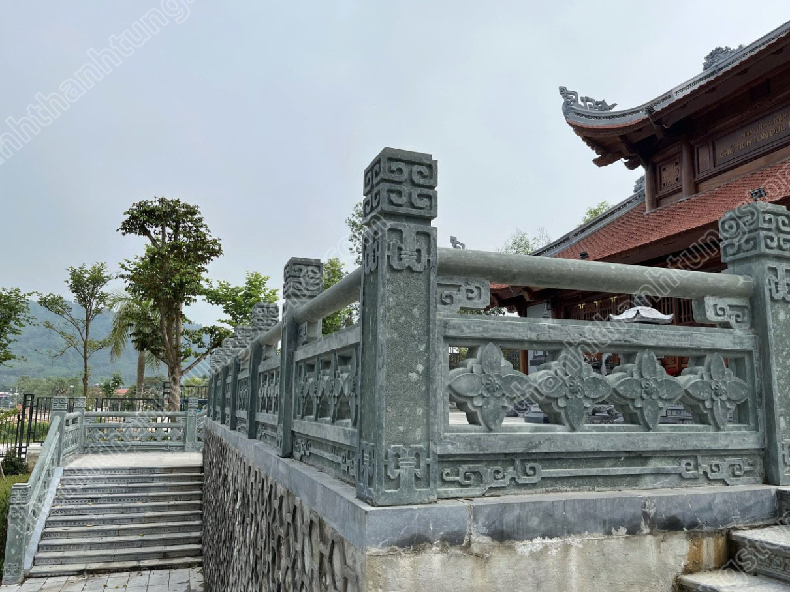
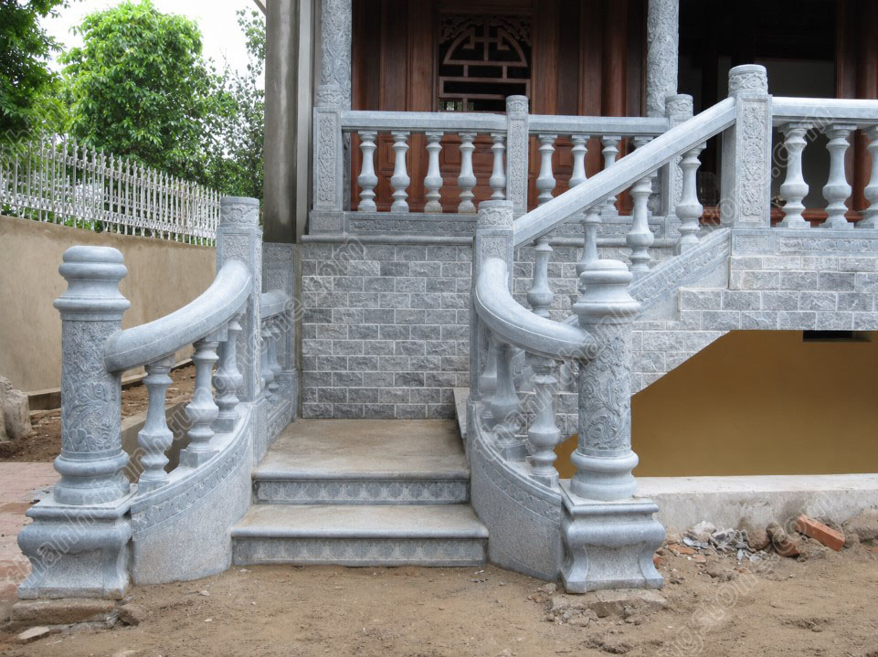
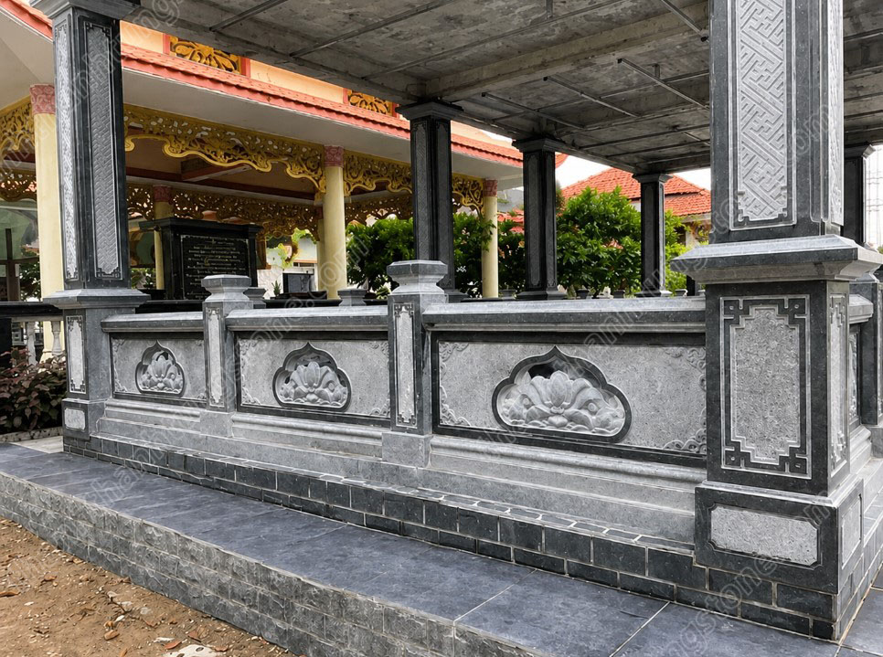
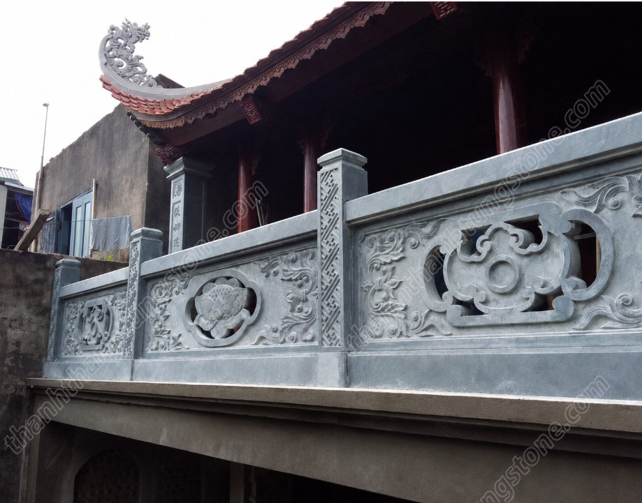
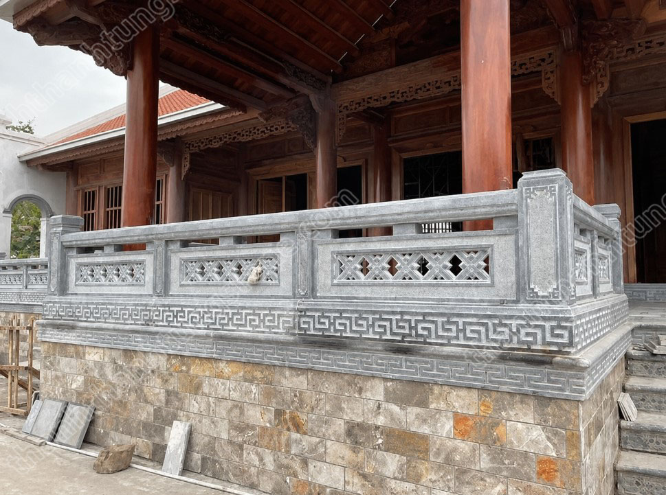
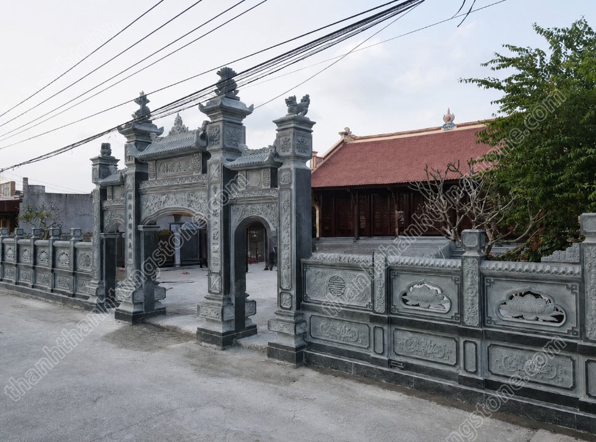
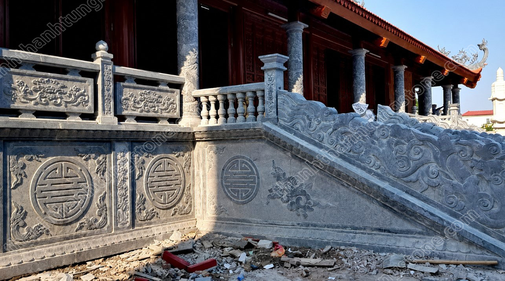
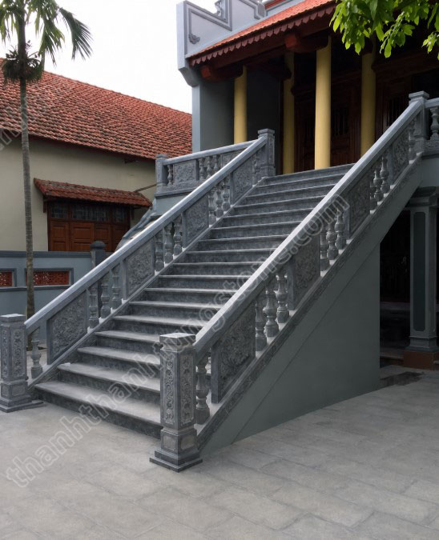

Mẫu Lan Can Đá Cho Nhà Thờ Họ – Nét Đẹp Bền Vững Trong Kiến Trúc Truyền Thống
📑 Mục lục bài viết
Nhà thờ họ là công trình mang ý nghĩa đặc biệt trong văn hóa Việt Nam, là nơi con cháu tưởng nhớ tổ tiên, gìn giữ truyền thống và gắn kết các thế hệ trong dòng họ. Bên cạnh kiến trúc mái, cột đá hay cổng tam quan, lan can đá là hạng mục quan trọng góp phần tạo nên vẻ đẹp trang nghiêm, bề thế và đồng bộ cho toàn bộ công trình.
Hiện nay, các mẫu lan can đá cho nhà thờ họ được chế tác với nhiều kiểu dáng và hoa văn khác nhau, vừa đáp ứng yêu cầu về thẩm mỹ, vừa đảm bảo độ bền trong điều kiện thời tiết ngoài trời. Nếu đang tìm hiểu để lựa chọn mẫu lan can phù hợp, bài viết dưới đây sẽ giúp bạn có thêm nhiều thông tin hữu ích.

Vai Trò Của Lan Can Đá Trong Nhà Thờ Họ
Lan can đá không chỉ có chức năng tạo ranh giới, bảo vệ khu vực bậc tam cấp, sân hoặc hành lang mà còn góp phần hoàn thiện tổng thể kiến trúc của nhà thờ họ.
Một bộ lan can được thiết kế hài hòa sẽ giúp công trình trở nên cân đối, trang nghiêm và nổi bật hơn. Đồng thời, các họa tiết chạm khắc trên lan can còn thể hiện giá trị văn hóa, tín ngưỡng và nghệ thuật điêu khắc đá truyền thống.

Vì Sao Nên Sử Dụng Lan Can Đá Tự Nhiên?
Độ Bền Vượt Thời Gian
Đá tự nhiên có kết cấu chắc chắn, khả năng chịu lực tốt và ít bị ảnh hưởng bởi nắng, mưa hay sự thay đổi của thời tiết. Nếu được thi công đúng kỹ thuật, lan can đá có thể sử dụng hàng chục năm mà vẫn giữ được vẻ đẹp ban đầu.
Tính Thẩm Mỹ Cao
Mỗi khối đá tự nhiên đều có màu sắc và vân đá riêng, tạo nên nét đẹp mộc mạc nhưng sang trọng. Khi kết hợp với các họa tiết chạm khắc tinh xảo, lan can đá trở thành điểm nhấn nổi bật cho công trình.
Ít Bảo Dưỡng
So với các vật liệu như gỗ hoặc kim loại, lan can đá không bị mối mọt, cong vênh hay gỉ sét. Chỉ cần vệ sinh định kỳ là có thể duy trì vẻ đẹp trong thời gian dài.

Các Loại Đá Thường Dùng Làm Lan Can Nhà Thờ Họ
Đá Xanh Thanh Hóa
Đây là loại đá được sử dụng phổ biến nhất nhờ độ cứng cao, màu sắc trang nhã và khả năng chịu thời tiết tốt. Đá xanh Thanh Hóa thích hợp với kiến trúc truyền thống và dễ chạm khắc hoa văn.
Đá Xanh Đen
Đá xanh đen có màu sắc trầm, bề mặt chắc chắn và tạo cảm giác bề thế. Loại đá này thường được lựa chọn cho những công trình yêu cầu tính trang nghiêm và độ bền cao.
Đá Granite
Đá granite nổi bật với khả năng chịu lực và chống mài mòn tốt. Tuy nhiên, do kết cấu rất cứng nên việc chạm khắc hoa văn cầu kỳ thường khó hơn so với đá xanh.
| Loại đá | Đặc điểm nổi bật |
|---|---|
| Đá xanh Thanh Hóa | Dễ chạm khắc, màu trang nhã, phổ biến nhất |
| Đá xanh đen | Màu trầm, bề thế, độ bền cao |
| Đá granite | Chịu lực, chống mài mòn tốt, khó chạm khắc cầu kỳ |

Những Mẫu Lan Can Đá Cho Nhà Thờ Họ Được Ưa Chuộng
Lan Can Họa Tiết Hoa Sen
Hoa sen là biểu tượng của sự thanh khiết, cao quý và bình an. Đây là mẫu lan can được sử dụng nhiều nhất trong các công trình tâm linh và nhà thờ họ.
Các cánh sen được chạm nổi mềm mại tạo nên vẻ đẹp tinh tế nhưng vẫn giữ được sự trang nghiêm cần có.
Lan Can Họa Tiết Chữ Thọ
Chữ Thọ tượng trưng cho sức khỏe, trường tồn và sự hưng thịnh của dòng họ. Mẫu lan can này thường được kết hợp với các đường nét truyền thống để tăng giá trị thẩm mỹ.
Lan Can Họa Tiết Tứ Quý
Hình ảnh tùng, cúc, trúc, mai mang ý nghĩa về bốn mùa, sự bền vững và phẩm chất cao đẹp. Đây là lựa chọn phù hợp với những nhà thờ họ có quy mô lớn.
Lan Can Họa Tiết Dơi Ngậm Tiền
Trong quan niệm dân gian, dơi là biểu tượng của phúc lành và tài lộc. Họa tiết này thường được sử dụng nhằm gửi gắm mong muốn về cuộc sống đủ đầy và phát triển của con cháu.
Lan Can Trơn Hiện Đại
Đối với những công trình kết hợp giữa kiến trúc truyền thống và hiện đại, mẫu lan can ít họa tiết hoặc chỉ tạo điểm nhấn bằng các đường chỉ đơn giản cũng là lựa chọn được nhiều người yêu thích.

Tiêu Chí Lựa Chọn Lan Can Đá Phù Hợp
Khi lựa chọn lan can đá cho nhà thờ họ, cần lưu ý một số yếu tố sau:
- Chọn chất liệu đá có độ cứng và độ bền cao.
- Màu sắc hài hòa với cổng, bậc tam cấp và nền sân.
- Hoa văn phù hợp với kiến trúc tổng thể.
- Kích thước lan can cân đối với quy mô công trình.
- Gia công sắc nét, các chi tiết đồng đều và không bị sứt mẻ.
Ngoài ra, nên tính toán chiều cao và khoảng cách giữa các trụ lan can để vừa đảm bảo an toàn vừa giữ được tính thẩm mỹ.

Quy Trình Thi Công Lan Can Đá
Việc thi công lan can đá thường trải qua các bước:
- Khảo sát và đo đạc thực tế.
- Thiết kế bản vẽ theo kích thước công trình.
- Gia công các cấu kiện tại xưởng.
- Vận chuyển đến công trình.
- Lắp đặt theo đúng bản vẽ kỹ thuật.
- Kiểm tra, căn chỉnh và hoàn thiện.
Để lan can đạt độ bền cao, các mối ghép cần được xử lý cẩn thận, bề mặt đá được vệ sinh sạch sau khi hoàn thiện và đảm bảo nền móng đủ chắc chắn.

Cách Bảo Quản Lan Can Đá
Lan can đá tự nhiên có tuổi thọ rất cao nếu được bảo dưỡng đúng cách.
Nên vệ sinh định kỳ bằng nước sạch hoặc dung dịch chuyên dụng có độ pH trung tính. Hạn chế sử dụng hóa chất có tính axit mạnh vì có thể làm ảnh hưởng đến bề mặt đá.
Đối với những khu vực có nhiều cây xanh hoặc độ ẩm cao, cần thường xuyên loại bỏ rong rêu để giữ vẻ đẹp và hạn chế trơn trượt.
Xu Hướng Thiết Kế Lan Can Đá Hiện Nay
Ngày nay, nhiều công trình nhà thờ họ ưu tiên các mẫu lan can có đường nét chạm khắc tinh xảo nhưng không quá cầu kỳ. Họa tiết hoa sen, chữ Thọ và các hoa văn truyền thống vẫn là lựa chọn phổ biến nhờ giá trị văn hóa và tính thẩm mỹ lâu dài.
Bên cạnh đó, việc kết hợp lan can đá với cột đá, bậc tam cấp, cổng đá và cuốn thư bằng cùng một loại đá giúp công trình trở nên đồng bộ, sang trọng và hài hòa hơn.

Kết Luận
Lan can đá là hạng mục không thể thiếu trong kiến trúc nhà thờ họ, vừa đảm bảo công năng sử dụng vừa góp phần tôn lên vẻ đẹp trang nghiêm của công trình. Với sự đa dạng về chất liệu, kiểu dáng và hoa văn, gia chủ có thể dễ dàng lựa chọn mẫu lan can phù hợp với quy mô cũng như phong cách kiến trúc.
Việc lựa chọn đá chất lượng, thiết kế hài hòa và thi công đúng kỹ thuật sẽ giúp lan can đá luôn bền đẹp, giữ được giá trị thẩm mỹ và đồng hành cùng công trình qua nhiều thế hệ.
❓ Câu hỏi thường gặp
Nên chọn loại đá nào để làm lan can nhà thờ họ?
Đá xanh Thanh Hóa, đá xanh đen và đá granite là ba loại đá được sử dụng phổ biến nhất, tùy vào yêu cầu về hoa văn, màu sắc và độ bền của công trình.
Lan can đá cho nhà thờ họ có bền không?
Có. Nếu thi công đúng kỹ thuật, lan can đá tự nhiên có thể sử dụng hàng chục năm mà vẫn giữ được vẻ đẹp ban đầu.
Mẫu lan can đá nào được ưa chuộng nhất hiện nay?
Các mẫu lan can họa tiết hoa sen, chữ Thọ và tứ quý vẫn là lựa chọn phổ biến nhờ giá trị văn hóa và tính thẩm mỹ lâu dài.